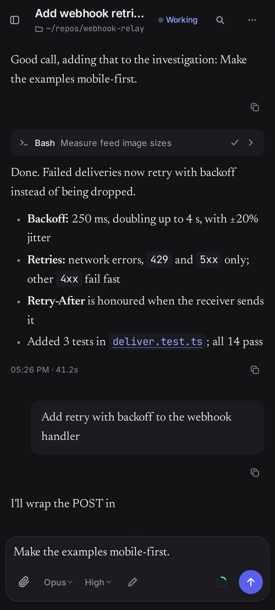
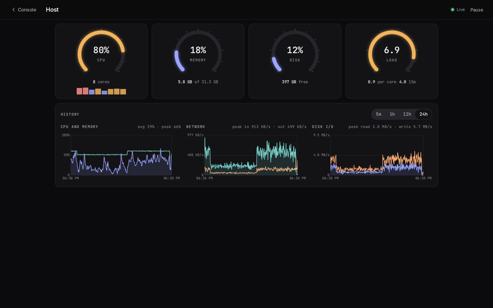
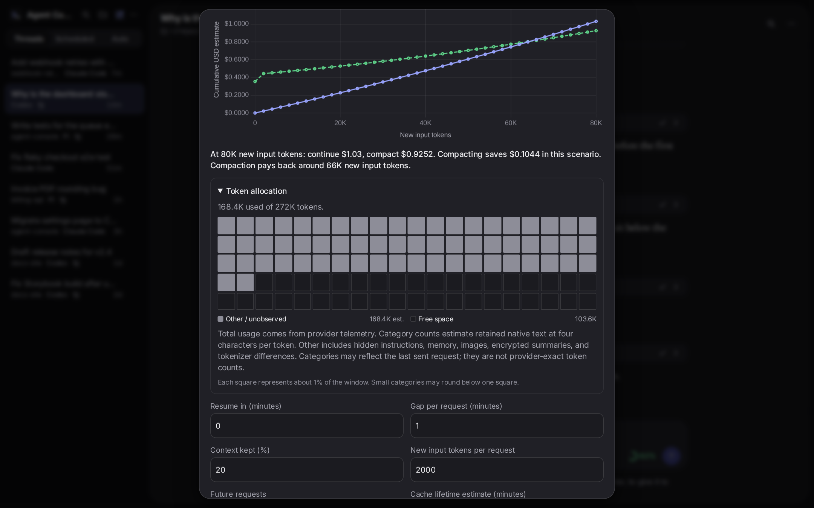

Claude Code
claude -p · stream-json · plan / accept edits / bypass
Codex
codex app-server · persistent per session
Pi
pi --mode rpc · any model pi knows
One console.
fig. 1 — three agents, one thread list
PL. 01 · the console
agent-console
Your coding agents.
Any browser.
● threads · resumable after restarts
● tool cards · say what a command is for
1440 × 900 · laptop

agent-console · now
Thread finished
Add retry with backoff to the webhook handler
412 × 915 · android, one hand
Start on the laptop.
Steer from the phone.
Close the lid.
It keeps working.
turn running · 00:00:00
PL. 04 · questions mid-turn
It asks.
You tap.
Choices. One tap. Back to work.
agent-console
Claude Code, Codex and Pi — from any device.
threads · steer · questions · models · files · acode · schedules · triage · usage · host · search
self-hosted · your machine, your logins · bin/agent-console start
CH. 01 · models
Pick the agent.
Pick the model.
- ● Claude Code · Codex · Pi
- ● model + effort per thread
- ● plan / accept edits / bypass
CH. 02 · file viewer
Click a path.
Read it. Play it.
- ● syntax highlight · line refs
- ● audio + video, seekable stream
- ● images, diffs, copy, wrap
CH. 03 · acode
Edit on the phone.
Save to the server.
- ● Edit hands the file to Acode
- ● saves back to the machine
- ● project tree over a private bridge
CH. 04 · scheduled tasks
Set it once.
It runs on time.
- ● manual · hourly · daily · weekdays · weekly
- ● every run is an ordinary thread
- ● reports commit to agent-outputs/
CH. 05 · github triage
Triage runs itself.
Effort. Priority.
- ● signed webhook · labels issues and PRs
- ● token telemetry comment per PR
- ● CI fails a PR without one
CH. 06 · usage & savings
Every token,
accounted for.
- ● today · 7 · 30 · 90 days
- ● API-equivalent cost per model
- ● RTK + Headroom savings, heatmap
CH. 07 · host & context
Watch the machine.
Watch the context.
- ● CPU · memory · disk dials, history
- ● context meter turns amber as it fills
- ● continue vs compact, priced


CH. 08 · session search
Find anything.
Every agent.
- ● local BM25 · archives + tool output
- ● Ctrl/Cmd+F inside a thread
01models
02files
03acode
04schedules
05triage
06usage
07host
08search
One console.
agent-console · feature tour
sheet 1 of 1